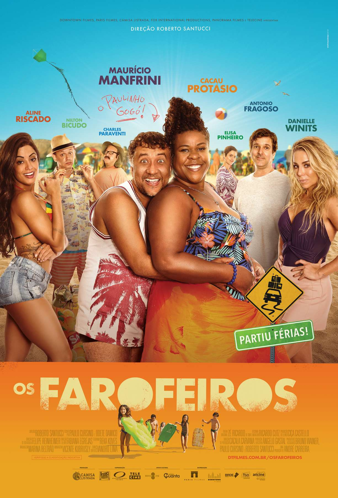
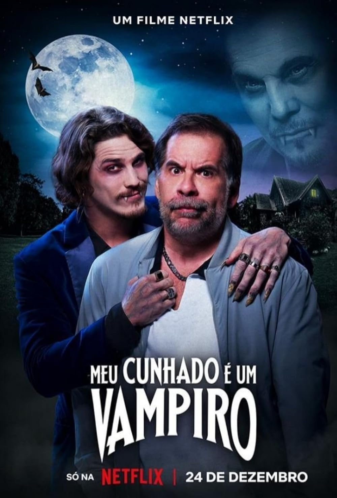

Interstellar
2014Sci-Fi • Aventura
Os filmes e séries que expandiram minha mente. Uma seleção de dev.barion
Sci-Fi • Aventura

Ficção científica • Aventura

Ficção científica • Aventura

Ficção científica • Thriller

Comédia • Humor

Comédia • Drama

Comédia • Terror
Comédia • Humor